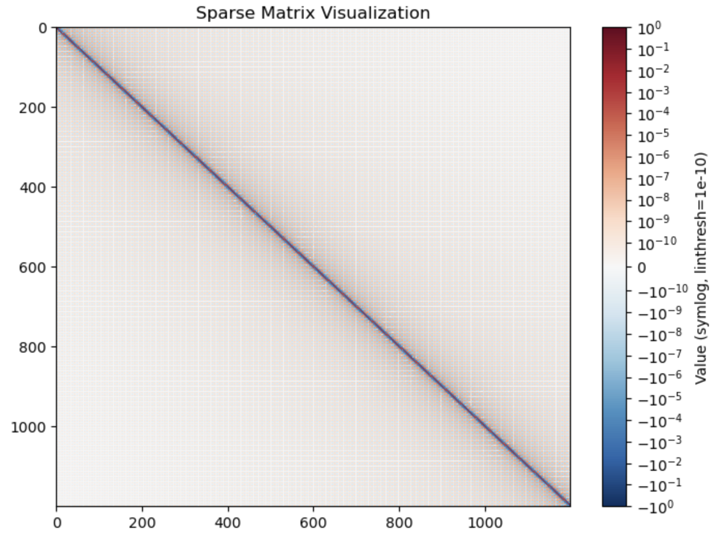
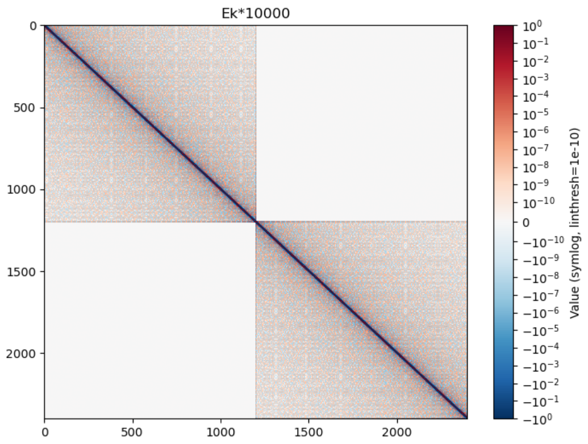
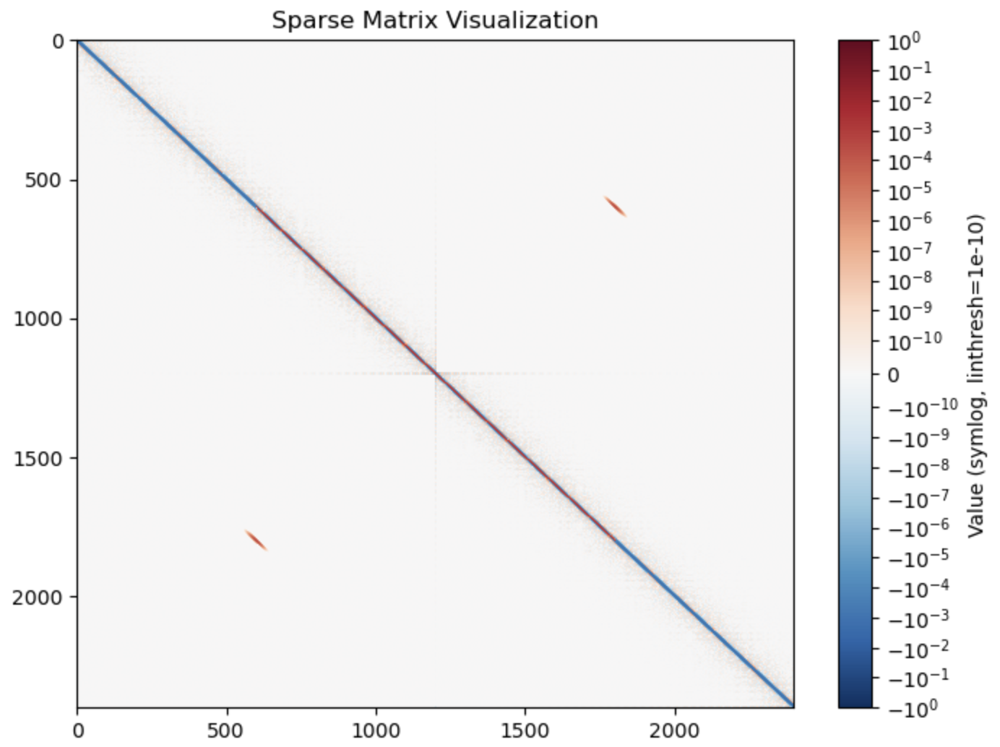
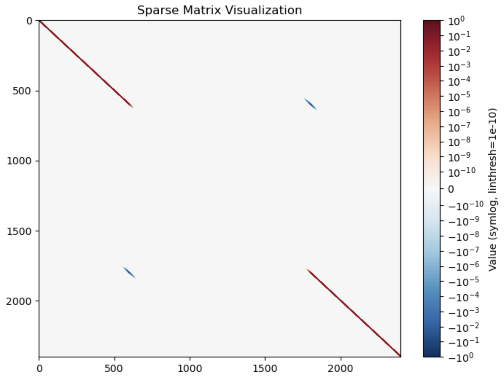
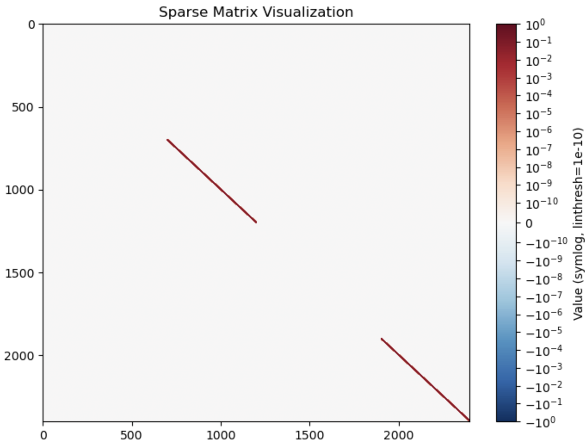
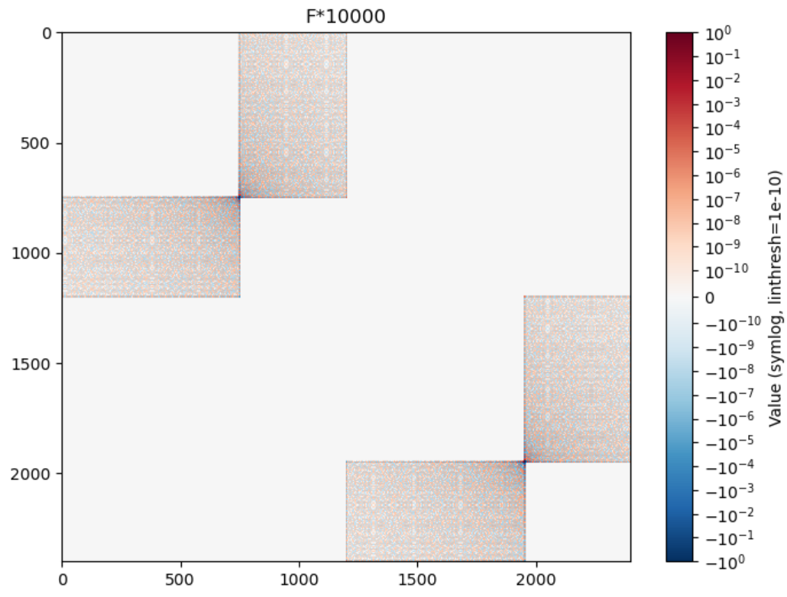
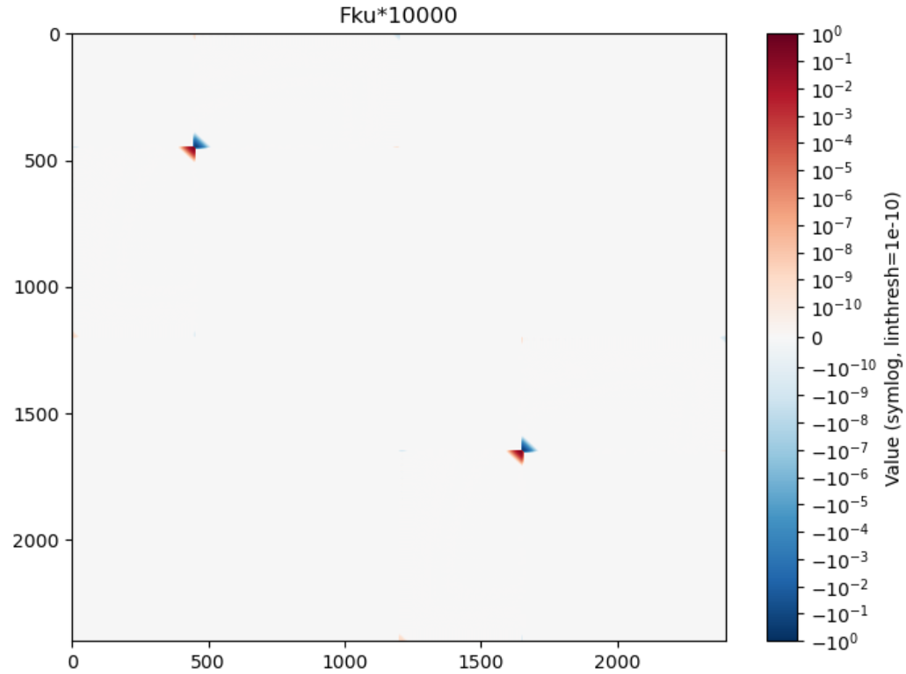
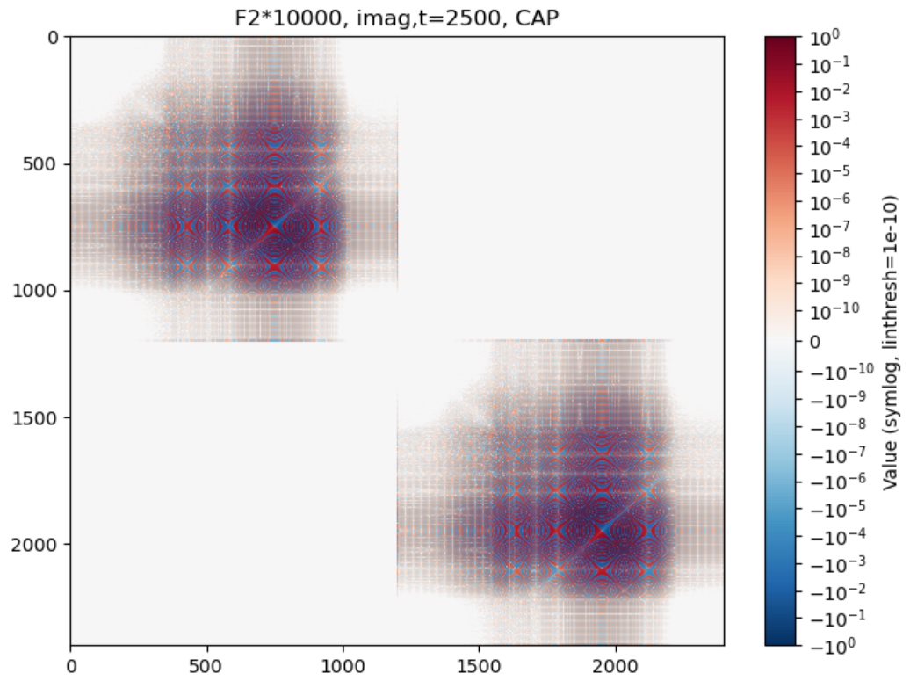
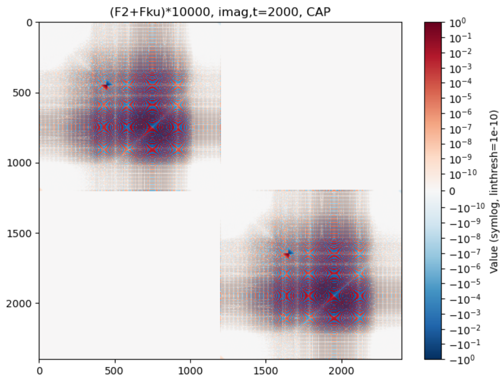

DVR Series - Part II
Operator Matrices in the DVR Basis
The useful thing about DVR is that the important quantum operators become inspectable matrices. Kinetic energy is dense and structured, local potentials are diagonal, side operators are projectors, and flux operators appear as commutators around a dividing surface.
Kinetic energy
For the infinite-domain sinc DVR convention used in the code,

Multi-state Hamiltonian blocks
For a diabatic model with electronic indices \(a,b\), the product-basis Hamiltonian is
The first term repeats the same nuclear kinetic matrix on each electronic-state block. The second term is diagonal in the DVR grid but may couple different electronic states at the same grid point.


Projectors and side operators
A side operator marks whether the nuclear coordinate lies to one side of a chosen dividing surface \(s\):


Flux operator
The flux through the dividing surface is the time derivative of the side operator. In operator form,
Because \(h\) is a function of position, local potential terms commute with it. The visible structure mainly comes from \([T,h]\).

Thermalized flux
For Kubo-transformed rate formulas, a thermally dressed flux appears:

Time evolution and absorbing boundaries
Finite DVR boxes reflect wavepackets unless the boundary is treated. A complex absorbing potential or mask damps boundary-region amplitude and reduces artificial recurrences.


These matrix pictures are the bridge between the method comparison in Part I and the concrete propagation in Part III. Once the block Hamiltonian is assembled, the wavepacket calculation is an application of the finite-dimensional unitary \(e^{-iHt/\hbar}\).
Code used in this note
- dvr_kubo_minimal.py contains the sinc kinetic matrix, multi-state Hamiltonian constructor, side projector, and flux commutator.
- source/flux-side-kubo/utils/quantum.py preserves the flux-side utility routines used while preparing the matrix diagnostics.